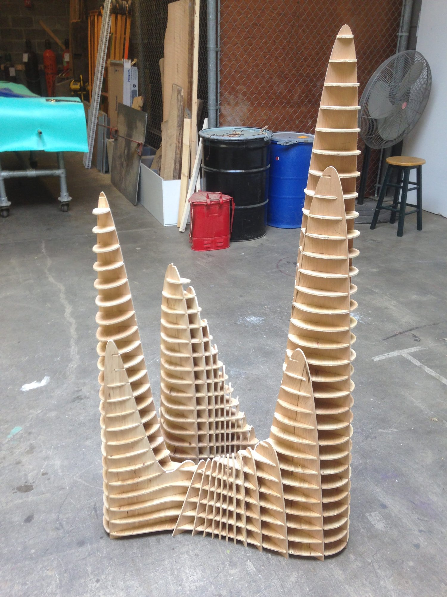
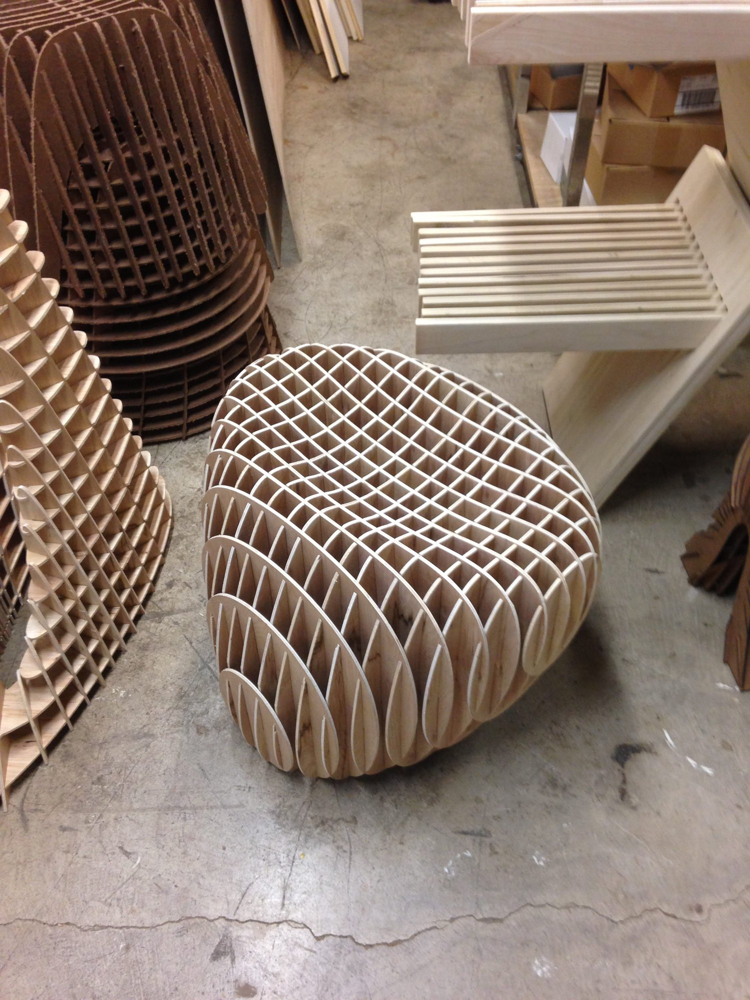
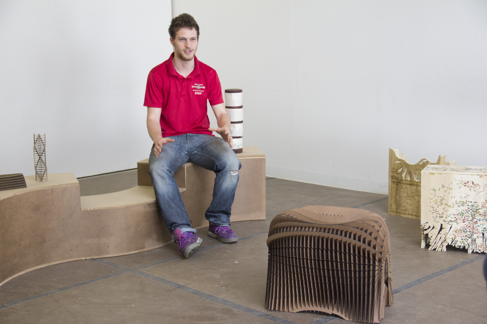
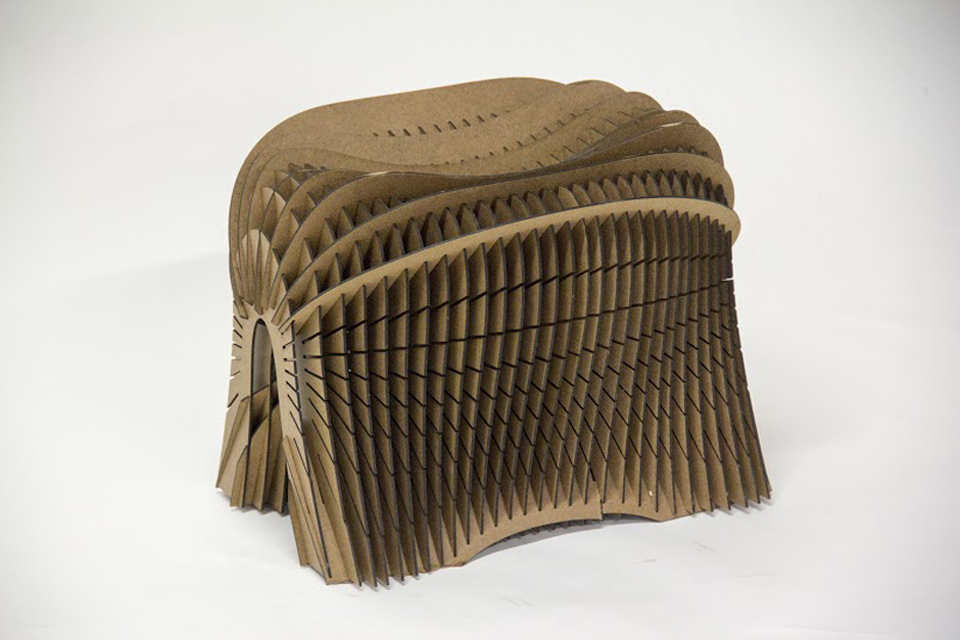
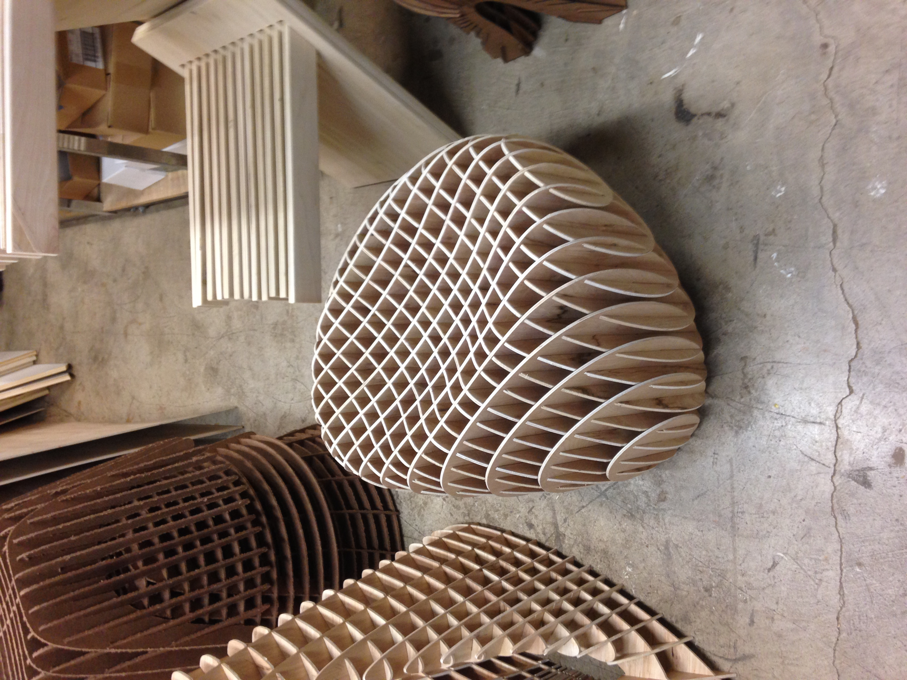
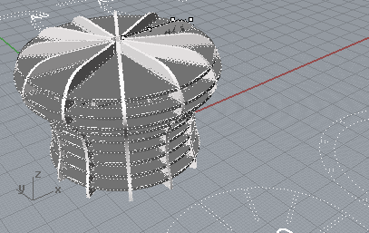
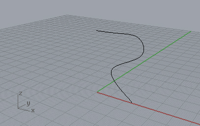
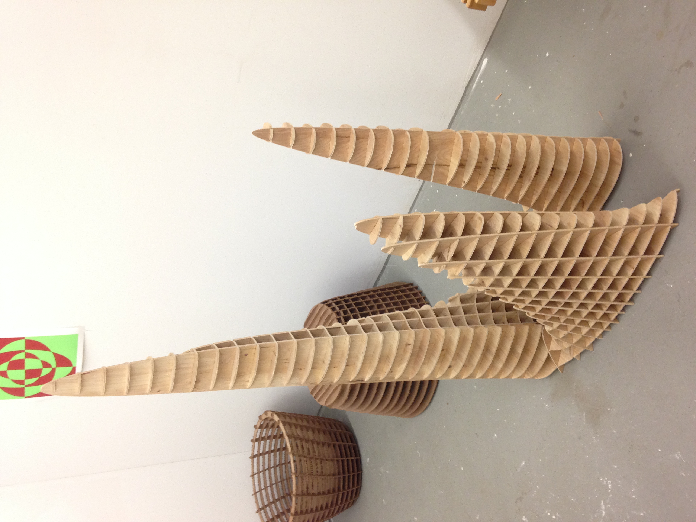
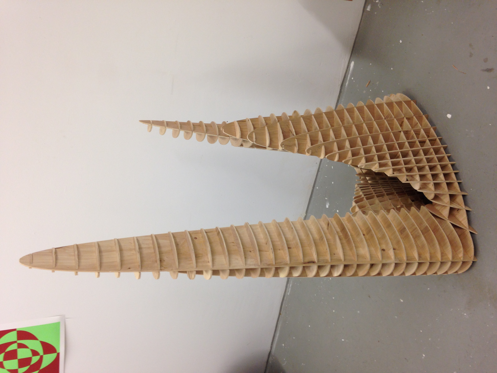

Furniture / Architecture / Sculpture
2013 – 2015
Rhino w/ Grasshopper
CNC routing
Plywood and hardwood
Furniture
A body of work from 2013 to 2015 built around one idea: model a solid form in 3D, slice it into planar profiles, and let a CNC router cut those profiles from flat sheet material. The slices stack, interlock and lock into each other, so the finished piece is a furniture form, a small structure or a sculpture depending on how you look at it. Furniture, sculpture and architecture all appear here because the method does not care which one it is making.
The series asks how a computational toolpath changes the logic of making furniture: what becomes possible when you're not constrained by conventional joinery, and what new constraints the machine introduces in its place.


2013 — Rhino with Grasshopper, CNC routing
A biomorphic study of organic growth: a broad flared cap on a tapered stalk, developed as a 3D mesh in Rhino and resolved into fabricable geometry. Axiradial describes the organizing logic: elements emanate radially from a central vertical axis, producing the mushroom-like symmetry while allowing local curvature to vary across the cap.


2013 – 2014 — Rhino with Grasshopper, CNC routing, woodworking
A torus articulated with radial ribs whose geometry follows the surface curvature at each point: shallow at the equator and deeper toward the inner curve, so the underlying math reads as physical structure. The ribs were generated as a Grasshopper definition, resolved into planar cuts, and routed in wood. Interlocking profiles hold the form together from the inside without fasteners.



2014 – 2015 — Rhino with Grasshopper, CNC routing, model making
Small physical models studying structural logic at a scale where architecture and sculpture are hard to tell apart. Each piece looks at how members load, cantilever and brace one another, and how structural honesty can drive form. Generated parametrically and fabricated by CNC, they are rigorous in their logic but meant as objects in their own right.


See also Nelson Quick-Slat, the most finished piece to come out of this method.